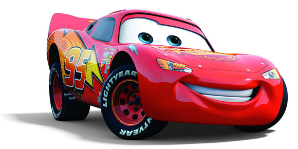

Que necesitas para hacer una pagina web?

- HTML
-
CSS
- Bootstrap
- Tailwind
- SASS
- JS
Pasos para hacer un frontend
- Tener un diseño/mook de tu pagina
- Tener en claro las funcionalidades y alcance de mi pagina
- Tener un limite de tiempo por objetivo (esto luego nos permitira presupuestar mejor)